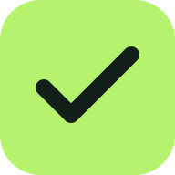

Flowboard
A little more organized
Make room for focus
Big ideas.
Small next steps.
Give every task a place, then move it forward.
Task name
Priority
Normal
High
Low
+ Add task
Cancel edit
Search tasks
Filter priority
All priorities
High
Normal
Low
Load sample board
Undo delete